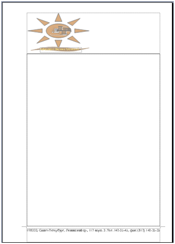

Содержание работы:
Задание: Создать бланк фирмы (предприятия) с эмблемой.
Фирменный (типовой) бланк – это лист бумаги, на котором различными способами (типографским, ризографическим, при помощи принтера) нанесены некоторые реквизиты. Как правило, в качестве реквизитов выступают эмблема предприятия, его наименование, юридический адрес, контактные телефоны, факс. Такие бланки используются для служебной переписки, приглашений, благодарностей, юбилейных поздравлений и т. п.
Подготовить фирменный бланк можно при помощи текстового редактора и сохранить в виде файла-шаблона (образца). Такой файл можно открыть в любое время и, дополнив текстом, сохранить как новый документ.
Выполнение задания состоит из 4-х этапов:
1 этап.Создание эмблемы предприятия.
Обычно создание эмблемы поручают художнику, дизайнеру или специальной фирме, занимающейся подобными заказами.
С момента создания и утверждения эмблема становится лицом фирмы. Отныне ее изображение будет украшать фирменный бланк предприятия, визитные карточки администрации, «бейджи» (идентификационные карточки сотрудников, прикрепленные к их одежде), титульные листы докладов и презентаций и многое другое.
Вам предстоит создавать вышеназванные документы, поэтому попытаемся создать эмблему предприятия, сотрудниками которого вы являетесь на время обучения. Предприятие занимается продажами различной оргтехники, компьютерной техники и оказания услуг по обслуживанию этой техники. За основу эмблемы возьмем первые буквы полного названия предприятия «Лаборатория высоких технологий» — ЛВТ.
2 этап. Сохранение вариантов эмблемы в глоссарии.
Деловая переписка изобилует повторяющимися элементами (фразами, обращениями, словесными оборотами), поэтому имеет смысл создать библиотеку типовых элементов документа. Среда Word позволяет создать такую библиотеку {глоссарий). Глоссарий Word может содержать не только фрагменты текста, но и рисунки, например, эмблему предприятия, часто используемые значки.
3 этап. Создание шаблона бланка предприятия.
4 этап. Пробное использование бланка.
Технология выполнение работы:
Задание 1.
- Открыть новый документ MSWord. Установить ориентацию листа – книжная, поля – 2 см.
- Добавить панель инструментов «Рисование».
- Создайте изображение аббревиатуры предприятия «ЛВТ» при помощи WordArt (каждую букву отдельно). Например,
Для этого:
- выполнить команду Вставка/Рисунок/Объект WordArt или воспользоваться кнопкой панели инструментов «Рисование» ,
- в окне Коллекция WordArt выбрать вариант написания заголовка,
- в специальном диалоговом окне Изменение текста WordArtвыбрать шрифт, размер шрифта, начертание, ввести текст, в данном случае букву Л,
- аналогично ввести остальные буквы,
- изменить размеры и положение объектов.
- Сгруппируйте объекты. Для этого:
- нажать кнопку на панели «Рисования» Выбор объекта ,
- с помощью мыши выделить созданные объекты,
- выполнить команду Рисование/Группировать,
- нажать кнопку на панели .
- Создайте фон эмблемы, воспользовавшись инструментом рисования Автофигуры. Например, выберите следующую фигуру: Для этого:
- выбрать команду на панели инструментов «Рисования» Автофигуры/Основные фигуры/Солнце,
- нажать левую кнопку мыши и провести по пустому месту страницы,
- установить размер, цвет заливки, цвет линии, положение Вокруг рамки с помощью команды Формат/Автофигура или используя команду контекстное меню Формат автофигуры.
- Соедините аббревиатуру и фон: наложите созданную фигуру на композицию из созданных ранее букв «ЛВТ». Переместите фигуру за буквы: Рисунок/Порядок/На задний план; добейтесь хорошего сочетания.
- Сохраните документ в личной папке под именем «Эмблема».
- Выберите картинку, подходящую по смыслу, выполнив команду Вставка/Рисунок/Картинки или нажав кнопку на панели инструментов «Рисования». Например:
Если подходящей картинки нет, то можно создать ее самостоятельно, используя любой графический редактор. А потом вставить из файла, выполнив команду Вставка/Рисунок/Из файла или нажав кнопку на панели инструментов «Рисования» . Или воспользоваться командами буфера обмена: Копировать, Вставить.
- Для картинки установите следующий формат: Положение/Вокруг рамки, используя команду контекстного меню Формат рисунка.
- Наложите картинку и на фон, установив для картинки Порядок/На передний план, используя контекстное меню. Добейтесь хорошего сочетания.
- Сгруппируйте элементы. Установите следующий размер эмблемы: высота – 2,8 см, ширина – 5,5 см, используя команду контекстного меню Формат объекта. Сохраните изменения.
- Создайте расшифровку аббревиатуры ЛВТ – Лаборатория Высоких Технологий, используя инструмент Надпись, с помощью кнопки на панели «Рисование» или Вставка/Надпись.
- Установите параметры надписи: Цвет Линий - Нет линий, Цвет Заливки - Нет заливки, используя команду контекстного меню Формат надписи. Для текста надписи установите: шрифт, размер, начертание, цвет текста.
- Поместите надпись рядом с эмблемой.
- Добавьте самостоятельно какой-либо элемент к эмблеме.
- Сгруппируйте все элементы. У вас должна получиться примерно эмблема, показанная на рисунке.
или
- Сохраните изменения.
- Установите положение изображения эмблемы в виде символа в тексте. Для этого используйте команду контекстного меню Формат объекта/Положение/Обтекание в тексте.
- Сохраните изменения.
Задание 2.
- Сохранить вариант эмблемы в глоссарии. Для этого:
- выделите графический объект Эмблема.
- создайте новый элемент автотекста: Вставка/Автотекст/Создать.
- введите имя элемента: Эмблема_ЛВТ, затем нажмите ОК.
- Поместить в глоссарий Продольный реквизит, который используется в разных документах, поэтому его следует:
- напечатайте текст: 198333, Санкт-Петербург, Ленинский пр., 117 корп. 3. Тел. 142-35-45, факс (812) 142-35-35;
- выделите текст и подберите шрифт, размер и начертание;
- поместите реквизиты предприятия в глоссарий: Вставка/Автотекст/Создать/Продольный_адрес.
Задание 3.
- Установить формат бланка:
- создайте новый документ: Файл/Создать/Шаблоны на моем компьютере/Новый документ, установить флажок Шаблон, ОК,
- установите поля страницы: верхнее – 1,5, нижнее – 2, левое – 3,5, правое – 1 см;
- щелкните на кнопке По умолчанию для использования установок во всех документах, использующих этот шаблон;
- подтвердите изменение параметров, щелкнув на кнопке Да;
- на вкладке Размер бумаги установите формат А4 и ориентацию Книжная;
- щелкните на кнопке По умолчанию; затем нажмите ОК;
- установите отображение установленных границ документа на листе: Сервис/Параметры/вкладка Вид/отметить флажком Границы текста.
Примечание Заметим, что установленные вами поля могут быть неприемлемыми для того принтера, который будет использован при распечатке документа. Особенно это касается матричных принтеров. Чтобы проделанная в первом пункте работа не оказалась бесполезной, следует либо всегда использовать один и тот же принтер, подключенный непосредственно к вашему компьютеру, либо позаботиться о программной установке типа принтера, на котором предполагается делать распечатку, для Word.
- Добавьте в бланк эмблему:
- определите верхний колонтитул: Вид/Колонтитулы, щелкнуть в Верхнем колонтитуле;
- вставьте из глоссария вариант эмблемы предприятия: Вставка/Автотекст/Автотекст, выбрать из списка Эмблема_ЛВТ;
- установите выравнивание по левому краю.
- Реквизиты предприятия (адрес, № телефона, № факса) помещаются в нижней области бланка. Удобно использовать для этого нижний колонтитул. Добавьте в бланк реквизиты:
- вставьте автотекст из глоссария в нижний колонтитул: Вставка/Автотекст/Автотекст/выбрать Продольный_адрес;
- выделите текст колонтитула и выровняйте его По центру;
- В конечном счете должен получиться бланк, подобный приведенному на рисунке.
- Выберите команду сохранения файла: Файл/Сохранить как...; документ при открытии был объявлен как шаблон, поэтому появляется окно с предложением записать бланк в папку Шаблоны; выберите свою линую папку, введите имя файла: Бланк фирмы, щелкните на кнопке Сохранить.
- Закройте все документы.
Задание 4.
- На основе ранее созданного бланка фирмы создать приглашение на презентацию фирмы. Для этого:
- выполнить команду меню Файл/Создать/Из имеющегося документа,
- в окне Создание из имеющегося документа выбрать личную папку и документ «Бланк фирмы», нажать кнопку Создать новый.
- В появившемся документе ввести текст приглашения:
УВАЖАЕМЫЕ ГОСПОДА!
Приглашаем вас на юбилейную презентацию компьютерной фирмы «Лаборатория высоких технологий», которая состоится
15 декабря этого года в 12:00
в ДК «Россия»
Будем рады Вас видеть!
- Оформите текст. Сделайте выравнивание текста по вертикали
- Выполните команду Файл/Предварительный просмотр. Если что-то не нравиться, то внесите изменения. Отправьте на печать. Посмотрите что получилось.
- Сохраните документ в личной папке под именем «Приглашение на презентацию фирмы».
- Закройте все документы.
В итоге проделанной работы в вашей папке должно находиться три документа:
- Эмблема.doc
- Бланк фирмы.dot
- Приглашение на презентацию.doc